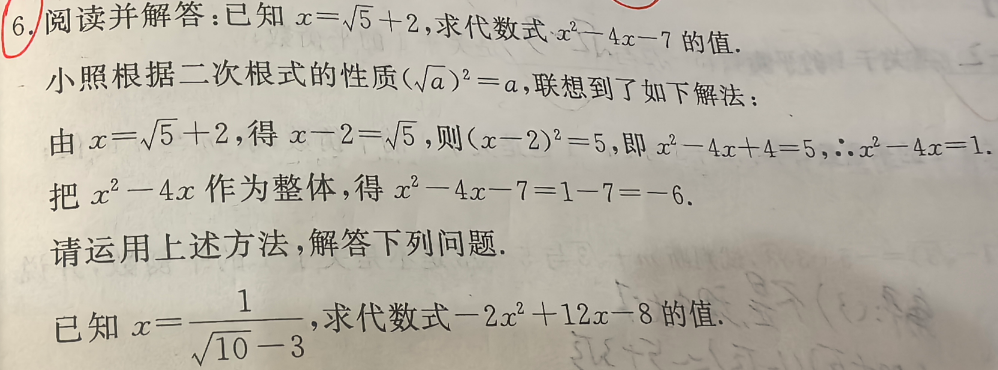

📷 点击查看原图
【原题示范】已知 ，求 的值。
解法：由 ，得 ，则 ，即 ，
，整体代入得：。
已知 ，求代数式 的值。
| 知识点 | 说明 |
|---|---|
| 分母有理化 | 分子分母同乘分母的共轭因式，利用 |
| 整体代入法 | 不直接求值，而是将已知条件转化为"整体"后再代入 |
| 配方法变形 | 通过移项、平方、配方构造目标式中的整体 |
| 平方差公式 | ，分母有理化的核心工具 |
题1（江西·中考·解答）：已知 ，求 的值。
💡 答：。分母有理化得 ，由 得 ，整体代入得 。📄 查看详细解答 →
题2（江西·中考·解答）：已知 ，求 的值。
💡 答：。由 平方得 ，整体代入得 。📄 查看详细解答 →
题3（江西·中考·解答）：已知 ，求 的值。
💡 答：。分母有理化得 ，由 得 ，整体代入得 。📄 查看详细解答 →
📌 来源：江西中考"整体代入法与分母有理化"同类改编题